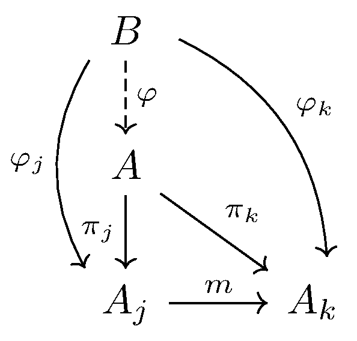

September 26th
Today I learned the sequence construction for the inverse limit in $\texttt{Set}$, or $\texttt{Grp}$ or $\texttt{Rings}$ or $\texttt{Vec}_k$ for that matter.
Namely, fix an index category $\mathcal I$ and a category $\mathcal C$ with a functor $F:\mathcal I\to\mathcal C$ taking $\bullet\in\mathcal I$ to $A_\bullet\in\mathcal C.$ We claim that\[A:=\left\{(a_i)_{i\in\mathcal I}\in\prod_{i\in\mathcal I}A_i:a_j\stackrel{F(m)}\longmapsto a_k\text{ when }k\stackrel m\longmapsto k\right\}\]is the limit $\varprojlim A_i$ we're looking for. Note we also have the natural projections $\pi_i:A\to A_i$ by taking $a\in A$ to to the component belonging to $i\in\mathcal I,$ which lives in $A_i.$
To get some feeling for this construction, we can say that it's thinking about $p$-adics like\[\ZZ_p=\left(a\pmod p,\,a\pmod{p^2},\,a\pmod{p^3},\ldots\right),\]for some $a\in\ZZ_p.$ If we squint really hard and chant the world "analysis'' three times, this can be even viewed as a kind of limiting sequence, approaching whatever element of $a\in\ZZ_p$ we were looking at.
Further, if there is some $B$ with maps $\varphi_i:B\to A_i$ which commute with the $F(m)$ maps, then we need to show that there is a unique induced map $\varphi:B\to A$ which also commutes, as follows.
Indeed, for $b\in B,$ this mapping $\varphi$ works if and only if it satisfies $\pi_i\varphi(b)=\varphi_i(b)$ for each $i.$ But this forces\[\varphi(b)=(\varphi_i(b))_{i\in\mathcal I},\]which works with our projections as promised.
Something that's a bit bothersome is that we haven't even proven that $A$ has any elements. After all, it's not trivial to me why we can make the elements in the sequence indexed by $\mathcal I$ like that are going to commute with the category of $\mathcal I$'s maps nicely. But even if $A$ were empty, then this isn't really a huge problem: $A$ works as proven, so apparently the empty set works fine as a limit.